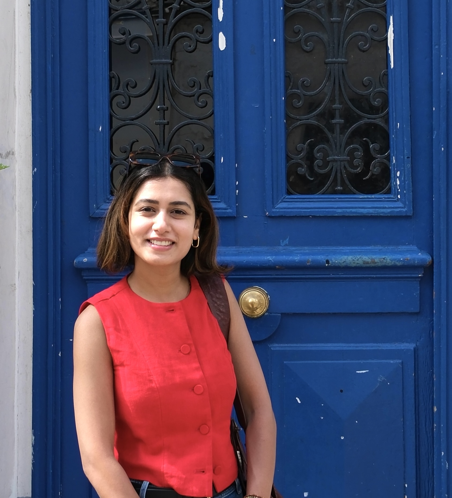

Monika Yadav
PhD Candidate in Sociology at Columbia University
I am completing my PhD in Sociology at Columbia University, where my research explores how people form beliefs, process information, and make decisions. My work bridges digital media, cognition, culture, and social psychology and I am a mixed-methods researcher experienced in both quantitative and qualitative approaches. I have designed and implemented field and survey experiments, conducted in-depth interviews and participant observation, and used statistical modeling, causal inference, and data visualization to analyze behavioral patterns.
